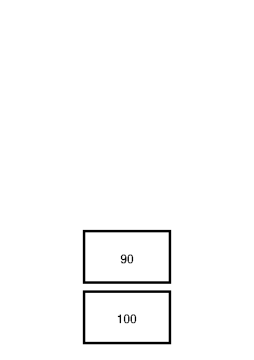
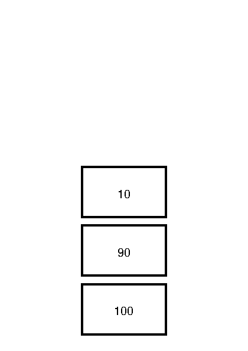
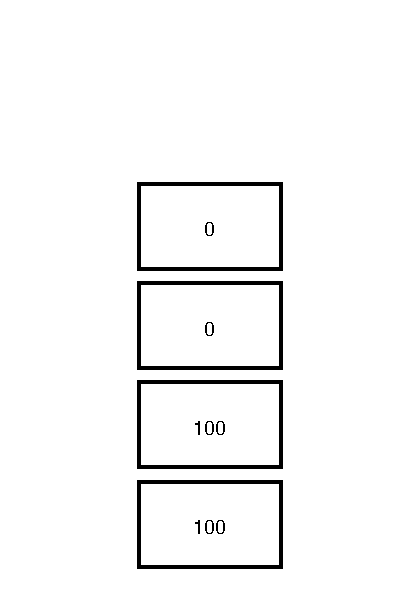
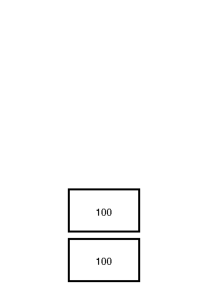
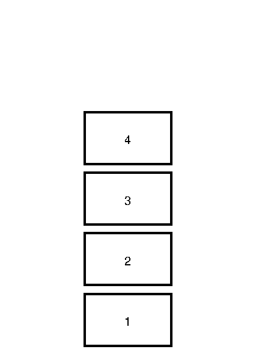

Stack
I would like to revisit the "Hello, World!"-program to highlight an important point. For completeness, here is the source of the "Hello, World!"-program that draws a line on the page.
0 0 moveto
100 100 lineto
stroke
A different program that produces the exact same output is shown next
100 100 0 0
moveto
lineto
stroke
How can this be?
Operators
In the last chapter we have called moveto a command. The name that PostScript uses is operator.
An operator is a functionality that PostScript provides. We have seen examples like newpath, moveto, lineto and stroke. Some operators need data to operate correctly. PostScript calls the necessary data operands. You can think of them as arguments to the operator.
Operand Stack
Operands to operators are taken from the operand stack. A stack is
an abstract data type that serves as a collection of elements, with two main principal operations:
Push, which adds an element to the collection, andPop, which removes the most recently added element that was not yet removed.
Below we can see a stack with two items, 100 and 90.

The item 100 is said to be on the bottom of the stack, the item 90 is said to be on the top of the stack. When one pushes the item 10 on the stack, the stack grows upward.

Value
When the PostScript interpreter encounters a value, like 100, 90 or 10, it will push it on the operand stack. So the first part of the alternative "Hello, World!"-program
100 100 0 0
Will push the values 100, 100, 0 and 0 on the operand stack. Resulting in a stack that looks like this

Operator
When the PostScript interpreter encounters an operator it will execute it. If an operator needs operands to operate, it will take does from the operand stack.
For example, the moveto operator expects two operands. It will pop does from the operand stack.
100 100 0 0
moveto
So the above program will result in an operand stack similar too

It leaves two operands for the lineto operator to consume.
Stack underflow
When the PostScript interpreter encounters an operator, but the necessary operands aren't on the stack, a stack underflow error is issued.
For example, when ones starts a Ghostscript session and immediately performs moveto
GS> moveto
one is greeted with an error:
Error: /stackunderflow in --moveto--
Operand stack:
Execution stack:
%interp_exit .runexec2 --nostringval-- --nostringval-- --nostringval-- 2 %stopped_push --nostringval-- --nostringval-- %loop_continue --nostringval-- --nostringval-- false 1 %stopped_push .runexec2 --nostringval-- --nostringval-- --nostringval-- 2 %stopped_push --nostringval--
Dictionary stack:
--dict:727/1123(ro)(G)-- --dict:0/20(G)-- --dict:75/200(L)--
Current allocation mode is local
Last OS error: Resource temporarily unavailable
Current file position is 7
While developing PostScript programs one often encounters these kind of errors.
Summary
PostScripts maintains various stacks. One of them is the operand stack. The operand stack is manipulated by pushing values onto them. Operators take values from the stack by popping operands from the stack. When an operator tries to pop operands from the stack which does not have enough items a stack underflow error occurs.
Exercises
- For each of the following program fragments, draw the resulting operand stack.
100 100
100 100
0 0
100 0
100 100
0 0
100 0
0 100
moveto
100 100
0 0
100 0
0 100
moveto
lineto
100 100
0 0
100 0
0 100
moveto
lineto
moveto
lineto
What does the last program look like when printed?
- Write a program that results in an operand stack like this:

- Is it always possible to write programs that first pushes all the operands on the stack before executing operators?